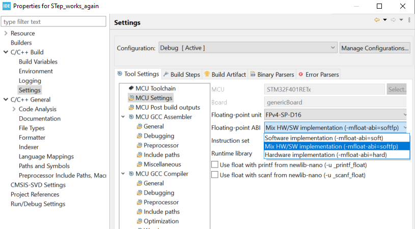

Table of Contents
- Installation
- Example
- Authors
Installation
- create new project in the STM32CubeIDE
- copy the content of Examples/Test_Step_Motor.c into the main.c of your project
- copy the system_stm32f4xx.c from CMSIS/Src/ to YOURPROJECT/Src/
- change the properties of your project
- open the properties of your project then expand C/C++ Build → Settings → MCU Settings

- make sure Floating-point unit is set to FPv4-SP-D16
- set the Floating-point ABI to mix HW/SW implementation (-mfloat-abi=softfp)
- expand C/C++ Build → Settings → expand MCU GCC Assembler → Include paths and add the following paths:
"${workspace_loc:/Balancer}"
"${workspace_loc:/MCAL}"
"${workspace_loc:/CMSIS}"
- expand C/C++ Build → Settings → expand MCU GCC Compiler → Include paths and add the following paths:
"${workspace_loc:/Balancer}"
"${workspace_loc:/MCAL}"
"${workspace_loc:/CMSIS}"
"${workspace_loc:/MCAL/Inc}"
"${workspace_loc:/MCAL/Inc/mcalTimer}"
"${workspace_loc:/CMSIS/Include}"
"${workspace_loc:/CMSIS/Device/ST/STM32F4xx/Include}"
"${workspace_loc:/Balancer/Inc}"
"${workspace_loc:/Balancer/Src}"
- expand C/C++ Build → Settings → expand MCU GCC Linker → Libraries → Libraries (-l) and add the following text:
Balancer
MCAL
CMSIS
- on the same page in the Library search path (-L) section add these paths:
"${workspace_loc:/Balancer/Inc}"
"${workspace_loc:/Balancer/Src}"
"${workspace_loc:/Balancer/Debug}"
"${workspace_loc:/MCAL/Debug}"
"${workspace_loc:/MCAL/Debug/Src}"
"${workspace_loc:/MCAL/Debug/Src/mcalTimer}"
"${workspace_loc:/CMSIS/Debug}"
"${workspace_loc:/CMSIS/Device/ST/STM32F4xx/Source/Templates}"
- expand C/C++ General → Paths and Symbols select the Debug configuration. Open the References tab and make sure the checkboxes of the following items are checked:
Balancer
MCAL
CMSIS
- try to debug
- if any errors occur
- delete the MCAL401 if it shows up in step 4
- make sure to the libraries are include in the right order (shown above)
Examples
#include <stdint.h>
#include <stdbool.h>
#include <stepper.h>
#include <i2c.h>
uint8_t vmax;
uint8_t addr = 0xC2;
uint8_t geschw = 0x00;
{
StepperInit(&
StepL, i2c,
i2cAddr_motL, 14, 1, 2, 14, 3, 1, 6, 0);
while(1)
{
for(int i = 0; i < 500; ++i )
{
int ac_pos = getActualPosition(0xC2);
setPosition(addr, ac_pos+32767);
}
softStop(0xc2);
setVmax(addr, geschw);
geschw++;
if(geschw == 0xf)
{
geschw = 0x00;
}
}
return 0;
}
uint8_t * convDecByteToHex(uint8_t byte)
Definition adcBAT.c:152
void StepperInit(Stepper_t *stepper, I2C_TypeDef *i2cBus, uint8_t i2cAddress, uint8_t iRun, uint8_t iHold, uint8_t vMin, uint8_t vMax, uint8_t stepMode, uint8_t rotationDirection, uint8_t acceleration, uint16_t securePosition)
Definition i2cAMIS.c:783
#define i2cAddr_motL
Left AMIS stepper I2C address.
Definition main.c:70
int main(void)
Balancer firmware entry point.
Definition main.c:323
static Stepper_t StepL
Left stepper (AMIS-30543).
Definition main.c:57
Authors
 1.16.1
1.16.1